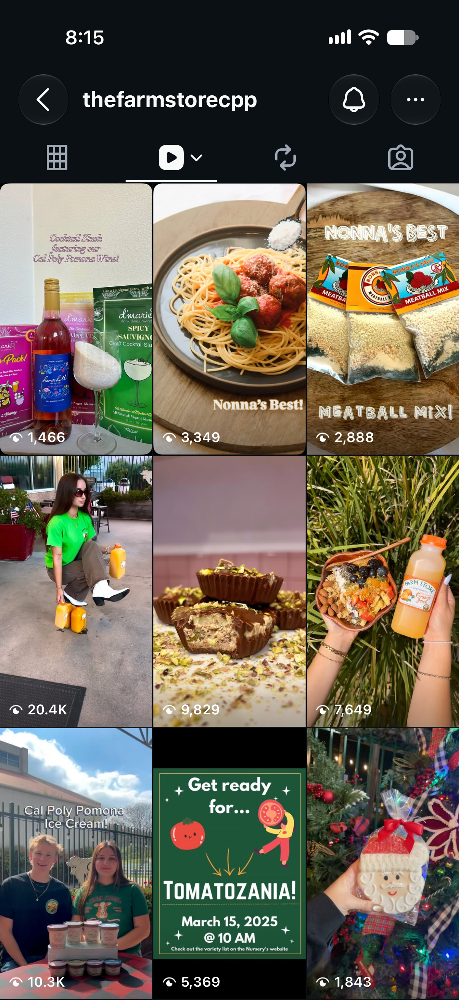
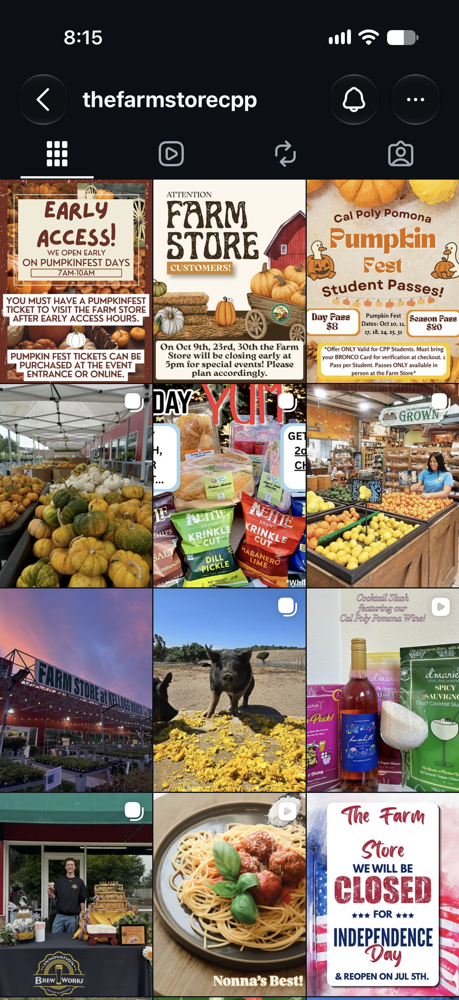
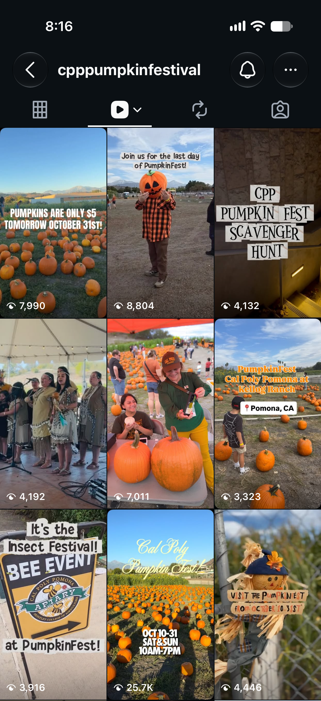
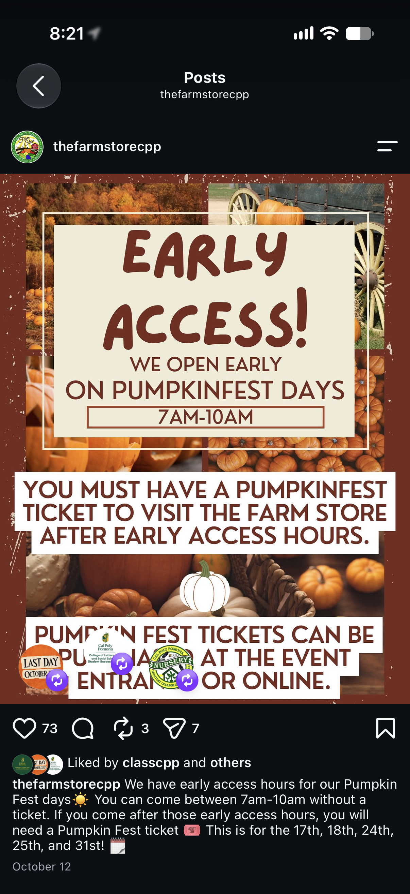
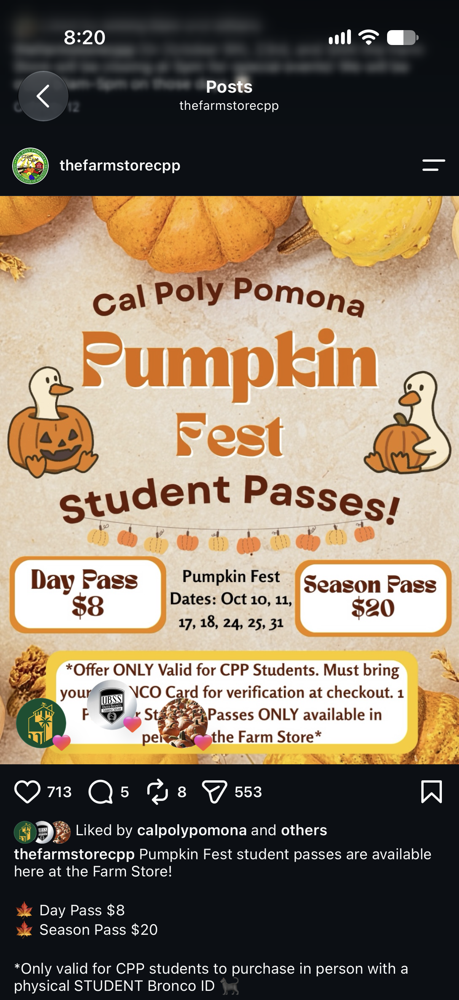

A repeatable system for turning seasonal products, short-form video and store moments into visits.
The strongest posts already point to a formula: show what is fresh, make it move, and give people a reason to visit.
“Strawberries are back” earned 1K+ reactions and 56 shares on Facebook, about 30× the page’s median post.
Fresh OJ reached 20.4K views, roughly 4× the account’s 5,030 followers.
The @909openmarket Pumpkin Fest Reel earned 669 likes, about 8× the event account’s median.
| Underperformer | Use instead |
|---|---|
| Hours and closure notices | Stories |
| Still-image slideshow Reels | Short video with motion |
| Fixed hashtag blocks | 3 to 5 relevant tags |
Public numbers show engagement, not reach or saves. Monthly Meta insights would close that gap.
Fresh OJ is the clearest example in the Farm Store account. Other visible Reels also reach 10.3K, 9.8K and 7.6K views.
The account has proof that short, visual product stories can travel. The gap is publishing more of them consistently.


Use the native format, show one thing happening, and give the viewer a reason to care now.
The goal is not more footage. The goal is one usable moment per post.
A recognizable trend gives viewers an immediate frame for the joke or idea. Trending pop music helps the Reel feel native to the feed.
For the next batch, reserve one Reel for a current trend and one for a product-led demo.

The Pumpkin Fest account’s visible Reels include 8.8K, 8.0K, 7.0K and 4.1K view examples.
Event content works best when it shows the place, the people and a timely reason to come. That belongs at the top of the funnel.

73 likes · 3 comments · 7 shares

713 likes · 5 comments · 8 reposts · 553 sends
Directional comparison from the user-provided screenshots, not a controlled test. The creative lesson is still clear: pair information with a reason to visit.
Each two-week batch covers all four pillars. The percentages are the default mix, not a rigid quota.
Reels: trending audio, real motion, short clips.
Carousels: 3 to 6 photos, one clear idea.
Stories: hours, reminders and quick updates.
Products coming back, people behind the products, student life, local partners, and a reason to come by this week.
Reels and local collaborations reach people who do not follow the store yet. Track views and shares.
Made at CPP and seasonal stories give people a reason to care. Track comments and new followers.
Deals, events and reminders turn interest into a store visit. Track shares, comments and code words.
Stories, reposts and weekly specials build a habit. Track tags and repeat commenters.
Every two-week batch needs at least one post at each stage. The current feed over-indexes on stage 3.
The unit of work is a batch: 8 to 10 planned posts, one store visit, one review link, and one handoff.
Pick posts across the four pillars. Write the shot list.
Capture photos and short vertical video for every post.
Build Reels and carousels. Resize for both platforms.
Write captions and the 3 to 5 relevant hashtags.
Send the batch to the client in one review link.
Deliver approved posts and dates to the student liaison.
Whoever films checks off every shot on site. Reuse leftover stills in Stories.
| # | Post | Pillar | Stage | Format |
|---|---|---|---|---|
| 1 | Build a gift box in 15 seconds | Events, deals and gifts | Discover | Reel |
| 2 | Gift boxes for every budget | Events, deals and gifts | Visit | Carousel |
| 3 | Thanksgiving shopping run | Recipes and trends | Discover | Reel |
| 4 | Made at CPP for your table | Made at CPP | Consider | Carousel |
| 5 | Fresh this week for the holidays | Seasonal drops | Consider | Reel |
| 6 | Shop local this Small Business Saturday | Events, deals and gifts | Visit | Carousel |
Reels need motion. Carousels need one clear idea. The first image should earn the swipe.
Thanksgiving week hours go in Stories from Nov 23 to 25, not the feed.
| Visit | Proposed timing | Focus | Covers posts for |
|---|---|---|---|
| 1 | Nov 6–8 | Gift boxes and Thanksgiving | Nov 16–29 |
| 2 | Nov 20–22 | Gift box ideas, stocking stuffers, final-week snacks | Nov 30–Dec 13 |
| 3 | Dec 4–6 | Last-minute gifts, holiday hours, winter produce | Dec 14–27 |
| 4 | Early January | New year and winter produce | January |
Which weekend works for students and store staff? Is the store open over winter break, and on what hours?
| Step | Owner | Deadline |
|---|---|---|
| Shot list shared | OptiMark | 3 days before visit |
| Edited batch sent | OptiMark | 5 days after visit |
| Feedback or approval | Farm Store | Within 2 business days |
| Revisions returned | OptiMark | Within 1 business day |
| Final batch to liaison | OptiMark | 5 days before first post |
4 to 5 feed posts per week across Facebook and Instagram, plus Stories on shoot days.
If a deadline slips, posts move back by one slot rather than going out unapproved.
Nov 3: share strategy for sign-off and send the batch 1 shot list.
Nov 4: confirm visit day, approver, hours and gift boxes.
Nov 6–8: shoot batch 1.
Nov 16–28: publish posts 1 to 6.
Dec 1–7: first monthly results summary.
Approve the operating system, assign the Farm Store approver, and confirm the first visit window.
A simple rhythm gives the team more room for good ideas: plan the batch, capture the moment, publish with purpose, learn what moved people.